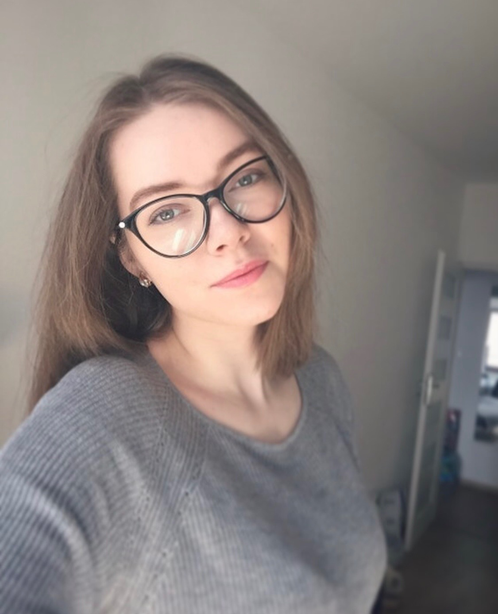

 Hello! I am Victoria and I am a javascript developer with great passion for frontend technologies.
I started my journey with programming in 2017, just got interested in web development and decided to try and create my first web page. It was fun and so exiting that I decided to participate in a couple of online courses, where I learned more about html, bem methodology, css and helpful tools for creating simple or even more complicated web pages, learned about responsive websites and started to become more and more interested in javascript.
These were my first steps in frontend development. Back then, I wasn't even sure where it would lead me. All I knew, is that not only I was interested in creating a website, but I also wanted to learn more about how to make this website more accessible, so that everyone can use it (you know, every single user matters :)).
As I lived in a foreign country (and still do), I understood that finding a job here, in Poland, wouldn't be easy, especially as I had no experience with commercial projects. So I decided to start a course in Codecool.
In the past year which I spent in Codecool, I studied Python and wrote in it some projects, also I started to become interested in clean code and how to properly use its techniques in my projects. Got familiar with Java and really loved it, as well as OOP (which really changed my way of thinking and coding). While I was creating projects in java (with great pleasure), I also learned how to use databases such as SqLite and PostgreSQL. Got more advanced knowledge in javascript, css and node.js. Learned how to make frontend and backend work together in one project, how to host my website on web servers, such as Nginx and Apache. Learned how to send http requests and manage them. I also wrote some projects in express.js, using firebase, html templates and MongoDB.
Before codecool I started to learn React, but during the course I decided to switch to Angular. Recently I started to develop more advanced project, where I could use my Angular knowledge and more advanced javascript features.
One of the most important things that I learned, besides programming skills, is how to work in a team, how to properly plan projects and maintain them. During my journey I made a lot of mistakes and learned a lot from them, fell in love with some technologies and looking forward to getting to know them better, as well as learn knew things.
Now, let me tell me more personal things about me. I like animals, I have two cats at home, who travelled with me from Russia. Also, I currently have a bunny, who, unfortunately, hadn't have any proper home yet and we offered it (maybe temporally, maybe not).
I like hiking, learned that after moving to Poland, great places and views :) Recently bought a bike and now I can explore even more amazing places in Cracow or nearby.
At home usually I usually prefer to watch TV shows (alone or with my husband), code or read books. Also, planning to learn to play guitar.
I can't fit here all the things I enjoy or am passionate about, so I hope we will have a chance to meet in person and chat :)